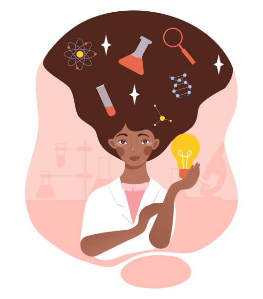

Olá, seja bem-vindo(a) ao mundo de Stella!⭐
Sobre Mim
Sou Stella Gonçalves, desenvolvedora FullStack movida pela paixão por tecnologia, inovação e pela vontade de deixar minha marca no mundo, tudo isso enquanto me divirto no processo! Tenho experiência em JavaScript, HTML, CSS, C# (.NET), Python, PHP, Laravel e SQL, criando sites e sistemas que são a cara de quem os utiliza. Também sou apaixonada por design, e acredito que a estética e a funcionalidade devem andar sempre juntas. Atualmente, curso Engenharia de Software, onde continuo ampliando minhas habilidades e visão sobre o universo da programação. Estou sempre em busca de aprender mais e aplicar soluções inovadoras, eficientes e, quem sabe, fazer o mundo um pouco mais tecnológico (e descontraído)! Aqui estão alguns dos projetos que já desenvolvi.
 LinkedIn
LinkedIn
 GitHub
GitHub